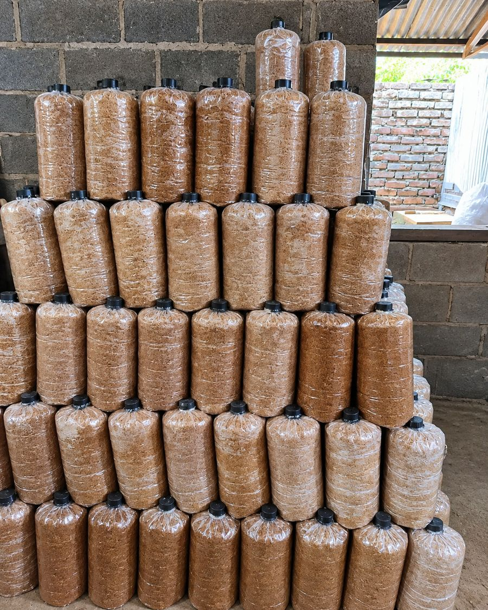

Jamur segar
Jamur konsumsi yang dipanen segar, dikemas bersih, siap dimasak.
Budidaya dan penjualan jamur
Jamur Mr.Pj membudidayakan jamur dengan cara yang bersih dan terkontrol, supaya yang sampai ke dapur Anda segar, aman, dan bergizi.
Tentang kami
Jamur Mr.Pj adalah usaha budidaya jamur yang menjaga kebersihan dan kesegaran di setiap tahap, mulai dari media tanam sampai jamur dipetik dan dikemas.
Kami percaya jamur yang baik berawal dari proses yang rapi. Karena itu kami merawat kelembapan, suhu, dan kebersihan rumah jamur setiap hari.
Daftar contoh. Kirim produk yang kamu jual dan saya sesuaikan.
Jamur konsumsi yang dipanen segar, dikemas bersih, siap dimasak.

Media tanam siap pakai untuk kamu yang ingin budidaya sendiri.
Jamur crispy dan enoki goreng yang gurih dan renyah, dikemas dalam box siap bawa.
Geser foto untuk melihat menu lainnya
Datang dan cicipi langsung di salah satu outlet Jamur Mr.Pj.
Cara kami menumbuhkan jamur
Urutan umum budidaya jamur. Detail dan waktu bisa kamu sesuaikan dengan usahamu.
Media tanam dicampur, dikemas, lalu disterilkan.
Bibit jamur dimasukkan ke baglog dalam kondisi bersih.
Baglog disimpan di ruang gelap sampai miselium memenuhi media.
Baglog dipindah ke rumah jamur yang lembap dan sejuk.
Jamur dipetik, dibersihkan, dan langsung dikemas.
Hal yang kami jaga di setiap panen.
Dipanen mendekati waktu pengiriman supaya rasa dan teksturnya terjaga.
Rumah jamur dan peralatan dibersihkan rutin sebelum dan sesudah panen.
Ukuran dan mutu dijaga agar cocok untuk dapur rumah maupun usaha kuliner.
Pesan lewat chat, kami konfirmasi stok dan jadwal pengambilan.
Hubungi Jamur Mr.Pj untuk menanyakan stok, produk, atau kerja sama.